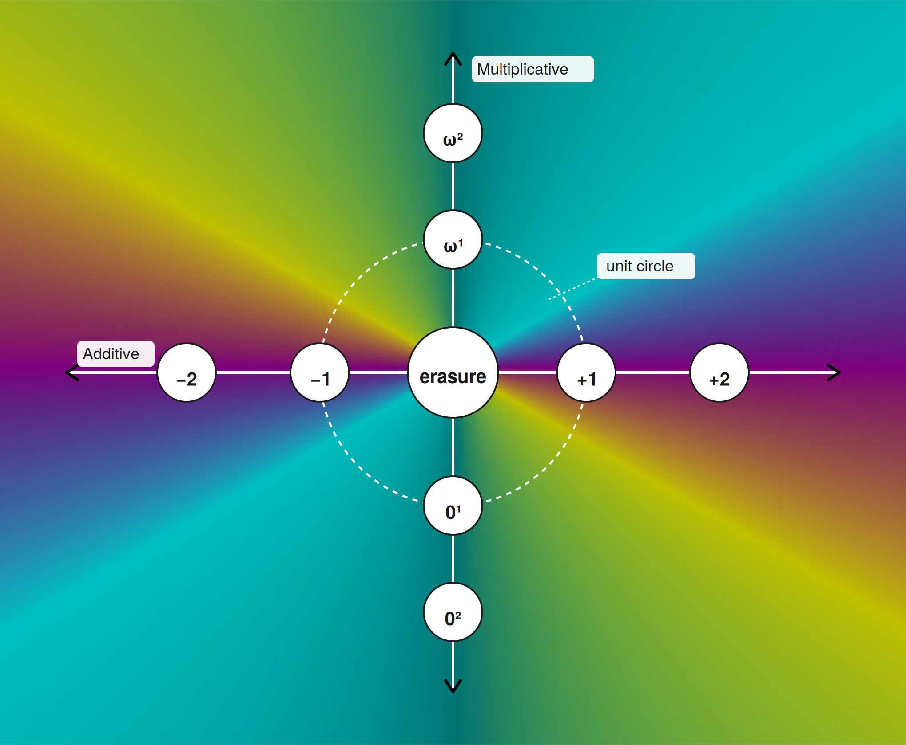

Unlike the typical complex plane focused around sqrt(-1), Traction Theory sees the complex plane from the perspective of zero-magnitude vector growing from the point at erasure.
We replace the standard additive identity with erasure, not a number.
We redefine zero as a displacement without magnitude. Zero is no longer an absorbing element.
As a result, we receive a 2D complex space:

The "unit circle" is actually a 1D point. It's distorted in this image for illustrative purposes. Traction theory doesn't change the shape of the number line.
| Mode | Traction | δ | |
|---|---|---|---|
| j | Hyperbolic | 0^(0/2) | +1 |
| ε | Parabolic | 0^(1/2) | 0 |
| η | Elliptic | 0^(ω/2) | -1 |
| k | Projective | 0^(-1/2) | ω |